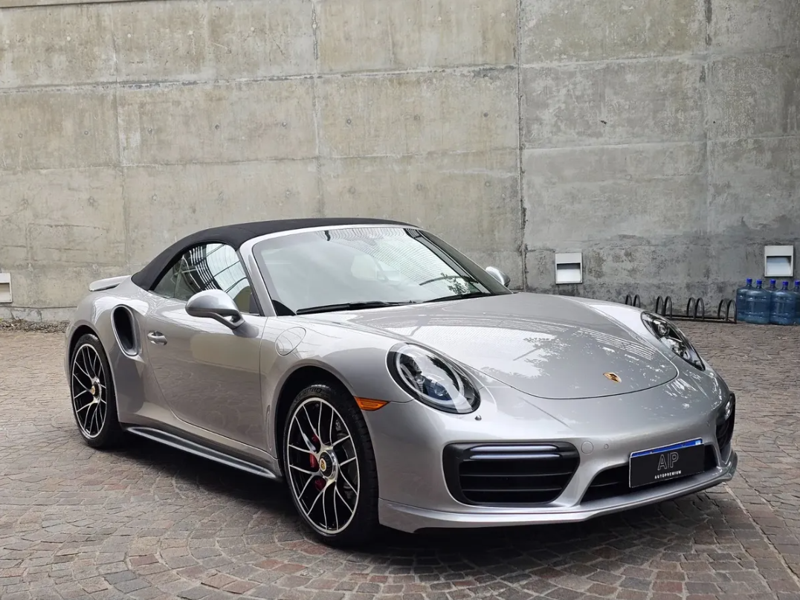

CATEGORÍA
Autos deportivos
Diseño, rendimiento y una experiencia de conducción orientada a quienes buscan algo diferente.
¿Qué caracteriza a un deportivo?
Los autos deportivos están diseñados para ofrecer una conducción más dinámica. Suelen prestar especial atención al motor, la respuesta, el diseño y el comportamiento del vehículo.
No siempre son la mejor opción para todos los usuarios. El consumo, el espacio disponible y el uso cotidiano también son aspectos que conviene analizar.

Aspectos a considerar
Rendimiento
Suelen priorizar la respuesta y el comportamiento dinámico del vehículo.
Diseño
Generalmente presentan diseños más agresivos y orientados a la estética deportiva.
Uso
Es importante analizar si el vehículo se utilizará diariamente o principalmente para ocio.
¿Estás pensando en un deportivo?
Contanos qué estás buscando y podemos orientarte.
Consultar